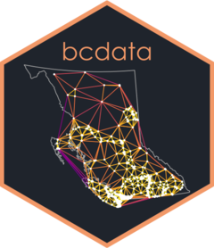

Andy Teucher
Home
R Packages
Workshops
About
Contact
On this page
Packages on CRAN
CRAN packages (contributing author)
Packages on GitHub
R Packages
Packages on CRAN
rmapshaper
Simplify and transform spatial objects
Andy Teucher, Kent Russel

bcdata
Query and download data from the BC Data Catalogue
Andy Teucher, Sam Albers, Stephanie Hazlitt
bcmaps
Easily download and use map layers from British Columbia
Andy Teucher, Sam Albers, Stephanie Hazlitt
lutz
Look up time zones for spatial coordinates
Andy Teucher, Bob Rudis
No matching items
CRAN packages (contributing author)
usethis
Automate package and project setup tasks
Hadley Wickham, Jennifer Bryan, Malcolm Barrett, Andy Teucher
rebird
Access the eBird database of bird observations
Rafael Maia, Scott Chamberlain, Andy Teucher, Sebastian Pardo
geojsonio
Convert various data formats to GeoJSON or TopoJSON
Scott Chamberlain, Andy Teucher, Michael Mahoney
lwgeom
Bindings to liblwgeom for simple features
Edzer Pebesma, Colin Rundel, Andy Teucher
No matching items
Packages on GitHub
rems
Get Data From British Columbia’s Environmental Monitoring System
pahwq
Calculate Water Quality Guidelines for PAHs
bcgovr
Set Up of ‘bcgov’ R Projects & Packages
bcgroundwater
Analyse B.C. Groundwater Level Data
rcaaqs
Tools to implement CAAQS analysis for air quality
wqbc
Tidy Water Quality Data and Calculate Thresholds for British Columbia
wqindex
Water Quality Index Calculation for British Columbia
canwqdata
Get Canadian Long-Term Water Quality Monitoring Data
No matching items